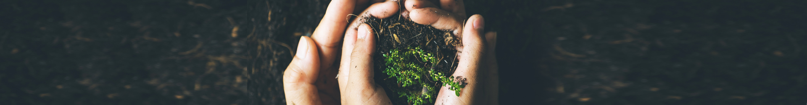
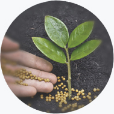
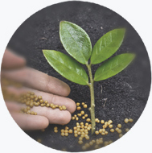
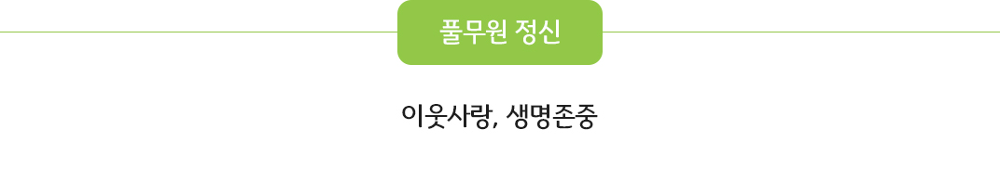
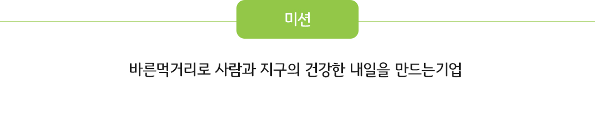
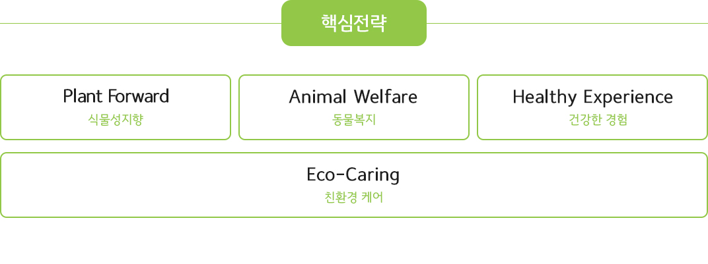
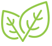
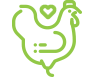
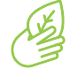
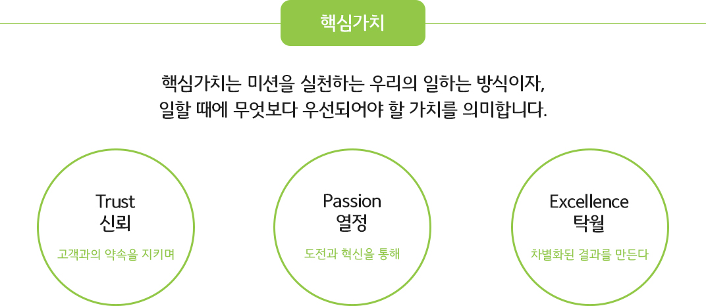

인재채용
인재채용 고객기쁨센터
고객기쁨센터 #풀무원
#풀무원



가치체계
바른먹거리로 사람과 지구의 건강한
내일을 만드는 기업입니다.
내일을 만드는 기업입니다.
백년에 이르는 생애 동안 이기주의를 벗고 사람과 사람, 사람과 자연이
서로 조화롭게 살 수 있는 길을 찾아 끊임없이 도전했던 농부 원경선.
풀무원 정신은 스스로 일군 풀무원농장에서 유기농을 통해 이웃사랑, 생명존중을 실천하고,
나아가 전쟁 없는 세상, 세계 평화를 널리 알리고 인도하는 데 한평생을 바쳤던
위대한 농부이자 성실한 평화주의자 원경선으로부터 시작됩니다.
풀무원이 ‘내 가족이 안심하고 먹을 바른먹거리’에서부터 한결같이 추구해온
‘나와 내 가족의 건강과 행복, 더 나아가 지구환경의 건강까지 두루 살피는 지속가능 식생활’은
이제 이 시대의 보편타당한 가치가 되어
우리의 일상에 공기처럼 스며들고 있습니다.

서로 조화롭게 살 수 있는 길을 찾아 끊임없이 도전했던 농부 원경선.
풀무원 정신은 스스로 일군 풀무원농장에서 유기농을 통해 이웃사랑, 생명존중을 실천하고,
나아가 전쟁 없는 세상, 세계 평화를 널리 알리고 인도하는 데 한평생을 바쳤던
위대한 농부이자 성실한 평화주의자 원경선으로부터 시작됩니다.
풀무원이 ‘내 가족이 안심하고 먹을 바른먹거리’에서부터 한결같이 추구해온
‘나와 내 가족의 건강과 행복, 더 나아가 지구환경의 건강까지 두루 살피는 지속가능 식생활’은
이제 이 시대의 보편타당한 가치가 되어
우리의 일상에 공기처럼 스며들고 있습니다.

풀무원의 정신은 이웃사랑과 생명존중의 정신입니다.
이웃사랑 정신은, 자연 그대로 신선하고 안전한 먹거리를 전하고자 하는 마음입니다.
사람(풀무원)과 사람(고객)과의 약속이며, 내 가족이 안심하고 먹을 수 있는
바른먹거리를 만들겠다는 풀무원의 의지입니다.
생명존중의 정신은, 이웃사랑 정신을 구현하기 위해
생명의 근원인 자연을 사랑하고 살리고자 하는 마음입니다.
작은 생명도 마음 놓고 살아갈 수 있는 자연환경을
가꾸어 나가겠다는 사람과 자연과의 약속입니다.
자연을 자연답게 살려야 사람이 사람답게 살 수 있습니다.
풀무원의 미션은 ‘바른먹거리로 사람과 지구의 건강한 내일을 만드는 기업’입니다.
우리의 Value Chain 전 과정을 혁신하여 사람, 동물, 환경에
보다 이로운 방법을 선택하고 개발합니다.
풀무원이 할 수 있는 최선의 노력, 최대의 실천을 통해 사람과 지구의
건강한 내일을 만드는 것이 우리의 목적입니다.
이웃사랑 정신은, 자연 그대로 신선하고 안전한 먹거리를 전하고자 하는 마음입니다.
사람(풀무원)과 사람(고객)과의 약속이며, 내 가족이 안심하고 먹을 수 있는
바른먹거리를 만들겠다는 풀무원의 의지입니다.
생명존중의 정신은, 이웃사랑 정신을 구현하기 위해
생명의 근원인 자연을 사랑하고 살리고자 하는 마음입니다.
작은 생명도 마음 놓고 살아갈 수 있는 자연환경을
가꾸어 나가겠다는 사람과 자연과의 약속입니다.
자연을 자연답게 살려야 사람이 사람답게 살 수 있습니다.
미션
바른먹거리로사람과 지구의 건강한 내일
을 만드는 기업풀무원의 미션은 ‘바른먹거리로 사람과 지구의 건강한 내일을 만드는 기업’입니다.
우리는 바른먹거리를 만듭니다.
우리의 Value Chain 전 과정을 혁신하여 사람, 동물, 환경에
보다 이로운 방법을 선택하고 개발합니다.
우리는 사람과 지구를 더 건강하게 만듭니다.
풀무원이 할 수 있는 최선의 노력, 최대의 실천을 통해 사람과 지구의
건강한 내일을 만드는 것이 우리의 목적입니다.
풀무원 가치체계



01
PForward
식물성지향
사람과 지구의 건강을 위해 식물성 원료를 지향하고 동물성
원료 사용을 줄이는 제품/식단
원료 사용을 줄이는 제품/식단
02
Animal Welfare
동물복지
건강한 사육환경에서 생산하고 생태계의 지속적인 순환에
기여하는 동물복지 식재
기여하는 동물복지 식재
03
Healthy Experience
건강한 경험
건강한 식생활을 원하는 고객에게, 차별화된 디자인 푸드와
큐레이션 서비스 역량을 바탕으로, 고객 여정 속 Pain Point
해결하는 특별한 고객 경험 서비스를 제공
큐레이션 서비스 역량을 바탕으로, 고객 여정 속 Pain Point
해결하는 특별한 고객 경험 서비스를 제공
04
Eco-Caring
친환경 케어원료, 제조, 판매/포장, 폐기 등 Business Value Chain
전과정에서 환경에 부정적인 영향 요인을 제거하거나 최소화
전과정에서 환경에 부정적인 영향 요인을 제거하거나 최소화

풀무원의 출발점인 고객과의 약속·원칙·규정을 지키며, 풀무원과 나 자신이 하는 일의 목적에 대한 주도적 몰입과.
끊임없는 도전과 혁신을 통해, 고객을 위한 새롭고 차별화된 가치(결과)를 제공합니다.
풀무원의 출발점인 고객과의 약속·원칙·규정을 지키며, 풀무원과 나 자신이 하는 일의 목적에 대한 주도적 몰입과.
끊임없는 도전과 혁신을 통해, 고객을 위한 새롭고 차별화된 가치(결과)를 제공합니다.